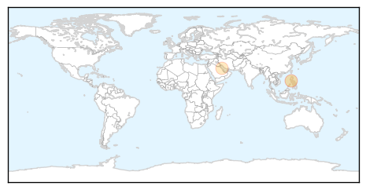

MERS
30-Day Web Trend
0 alerts, 3 warnings
30-Day Twitter Trend
5 alerts, 5 warnings
Article Locations
Article Confidences

Top Articles:
Top Tweets:
-
No tweets found for Mar 18, 2015
Swine Flu
30-Day Web Trend
6 alerts, 16 warnings

30-Day Twitter Trend
7 alerts, 0 warnings

Article Locations

Article Confidences

Top Articles:
- 1.000
- Death toll due to swine flu rises to 1809, but cases start reducing
- 0.999
- Swine flu in India: 27,886 people infected with the H1N1 virus
- 0.998
- Number of victims of swine flu increases to 3 in Turkey
- 0.998
- H1N1 claims 3 more, toll touches 400
- 0.994
- Swine Flu Deaths Cross 1,800, Cases May Dip in Next 2 Weeks
- 0.994
- Swine flu claims 3 more lives in Delhi, toll reaches 9
- 0.993
- Swine flu deaths cross 1,800 across country
- 0.991
- Swine flu toll touches 400 mark in Gujarat
- 0.991
- 2,083 positive swine flu cases in Telangana, toll reaches 74
- 0.990
- Mexico's Flu Death Toll Rise Terrifies World
- 0.988
- Swine flu toll in Rajasthan now 397
- 0.986
- Swine flu Death toll Reaches 397 and 6,226 Cases
- 0.986
- Pregnant H1N1 patient delivers baby, dies later
- 0.977
- One more swine flu death in Telangana, toll 74
- 0.969
- Two more swine flu deaths in 48 hours
- 0.969
- Woman dies of H1N1, toll up to 12
- 0.942
- Bengal swine flu toll mounts to 23
- 0.941
- Gautam Deb on ventilator
- 0.935
- Contagion claims eight lives in state
- 0.926
- Bengal swine flu toll mounts to 23
- 0.829
- Maha seeks Rs 100 cr aid to tackle swine flu
- 0.737
- Swine flu scare may hit Rajasthan's tourism industry
- 0.736
- Swine flu scare may hit Rajasthan's tourism industry
- 0.664
- Swine flu scare may hit Rajasthan's tourism industry
- 0.626
- Health minister cautions govt doctors against prescription of propaganda drugs
- 0.533
- Americans now must apply for an Egypt visa before travel
- 0.533
- Americans now must apply for an Egypt visa before travel
Top Tweets:
-
No tweets found for Mar 18, 2015